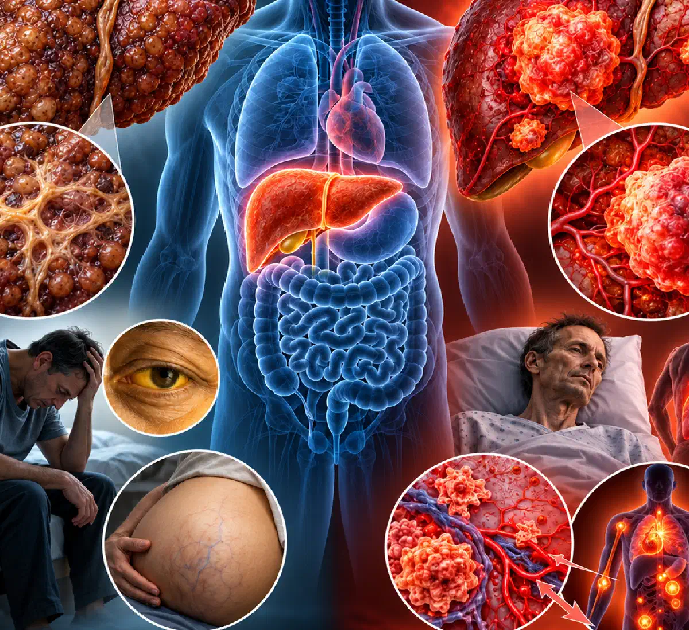

+38(068)
79 72 782
+38(068)
79 72 782Цирроз печени — это рак печени?
В чём разница и насколько опасны эти заболевания


Бесплатная консультация, работаем круглосуточно 24/7
В чём разница и насколько опасны эти заболевания

Дата написания: 15 окт. 2026 г.
Последнее обновление: 15 окт. 2026 г.
Цирроз печени и рак печени — два разных заболевания, которые часто ошибочно считают одним и тем же диагнозом. Цирроз представляет собой хроническое поражение печени, при котором нормальная ткань постепенно замещается рубцовой, нарушается кровообращение и снижается функциональная способность органа. Рак печени — злокачественное новообразование, возникающее вследствие неконтролируемого размножения изменённых клеток. При этом заболевания могут быть взаимосвязаны: цирроз является одним из главных факторов риска развития гепатоцеллюлярной карциномы — наиболее распространённого вида первичного рака печени. Особенно высокий риск наблюдается при хронических вирусных гепатитах, алкоголь-ассоциированном поражении печени и некоторых метаболических заболеваниях. Важно понимать, что цирроз не означает обязательного развития онкологии. Своевременная диагностика, лечение основного заболевания и регулярное наблюдение позволяют уменьшить вероятность осложнений и выявить злокачественную опухоль на ранней стадии.
Цирроз печени — самостоятельное хроническое заболевание, связанное с выраженным фиброзом и перестройкой структуры печёночной ткани. В результате длительного воспаления и повреждения клеток нормальные участки печени постепенно замещаются соединительной тканью и регенераторными узлами. Это нарушает кровоток внутри органа и может приводить к портальной гипертензии и печёночной недостаточности. Сам по себе цирроз не является злокачественной опухолью и не относится к онкологическим заболеваниям. Однако длительное повреждение и восстановление клеток создают условия для накопления генетических изменений, которые повышают риск развития рака. Пациентам с подтверждённым циррозом необходимо наблюдение гастроэнтеролога или гепатолога независимо от причины заболевания.
Главное отличие цирроза от рака заключается в характере патологического процесса. При циррозе происходит распространённое рубцевание и изменение структуры печени, тогда как при раке формируется злокачественная опухоль, способная проникать в окружающие ткани и распространяться за пределы органа. Цирроз может длительно протекать без выраженных симптомов, а рак печени иногда развивается на его фоне незаметно. Оба заболевания способны сопровождаться слабостью, снижением аппетита, похудением, желтухой и увеличением живота. Поэтому определить диагноз только по жалобам невозможно. Для диагностики используются лабораторные исследования, ультразвуковое обследование, эластография, КТ и МРТ по показаниям. При подозрении на опухоль необходима специализированная оценка полученных результатов.
Цирроз печени действительно увеличивает вероятность развития первичного рака печени, прежде всего гепатоцеллюлярной карциномы. Однако это не означает, что рубцовая ткань непосредственно превращается в опухоль. Злокачественные изменения могут возникать в клетках печени на фоне хронического повреждения, воспаления и нарушенной регенерации. Вероятность развития онкологии зависит от причины цирроза, активности заболевания, возраста и других факторов. У многих пациентов рак печени никогда не развивается, но риск сохраняется даже при улучшении функции органа. Поэтому людям с циррозом, которым показано онкологическое наблюдение, рекомендуют регулярно проходить обследования для раннего выявления новообразований.
При циррозе печёночная ткань постепенно теряет нормальную структуру. Образуются участки фиброза и узлы регенерации, которые затрудняют движение крови через печень и ухудшают её функции. В результате может развиваться портальная гипертензия, нарушение синтеза белков, снижение способности обезвреживать токсические вещества и другие осложнения. При злокачественной опухоли клетки начинают бесконтрольно делиться и формируют новообразование. По мере роста опухоль может повреждать сосуды, распространяться внутри печени и давать метастазы. Иногда цирроз и рак существуют одновременно, что осложняет выбор лечения. В таких случаях врачи оценивают не только размеры и распространённость опухоли, но и оставшуюся функциональную способность печени.
Цирроз развивается вследствие длительного повреждения печени различными заболеваниями и токсическими воздействиями. Одними из наиболее распространённых причин являются хронические вирусные гепатиты B и C, продолжительное чрезмерное употребление алкоголя и метаболически ассоциированная стеатотическая болезнь печени. Реже цирроз формируется при аутоиммунном гепатите, первичном билиарном холангите, наследственном гемохроматозе, болезни Вильсона и некоторых других состояниях. Иногда у одного пациента одновременно присутствуют несколько факторов повреждения печени. Например, употребление алкоголя может ускорять прогрессирование заболевания при вирусном гепатите или ожирении. Для выбора лечения необходимо установить основную причину цирроза и по возможности устранить воздействие повреждающих факторов.
Регулярное употребление больших доз алкоголя способно вызывать накопление жира в клетках печени, воспаление и постепенное развитие фиброза. У части пациентов эти изменения прогрессируют до алкоголь-ассоциированного цирроза. Этанол и продукты его обмена усиливают окислительный стресс, нарушают клеточные процессы и способствуют хроническому повреждению печёночной ткани. При сформировавшемся циррозе повышается риск гепатоцеллюлярной карциномы. Алкоголь также может усиливать повреждение печени при вирусных гепатитах и метаболических нарушениях. Если человек не способен самостоятельно прекратить употребление спиртного, необходимо профессиональное лечение алкогольной зависимости, направленное на достижение устойчивого отказа от алкоголя и предупреждение дальнейшего поражения внутренних органов.
Точного срока, через который употребление алкоголя обязательно приводит к циррозу, не существует. У одних людей тяжёлое поражение печени развивается после многих лет регулярного употребления спиртного, у других повреждение прогрессирует быстрее. На вероятность цирроза влияют количество алкоголя, продолжительность употребления, генетическая предрасположенность, пол, питание, ожирение и наличие вирусных гепатитов. Не каждый человек, регулярно употребляющий алкоголь, заболевает циррозом, однако риск увеличивается при длительном чрезмерном употреблении. Определить степень поражения печени только по алкогольному стажу невозможно. Для оценки необходимы лабораторные исследования, УЗИ, эластография и консультация специалиста. Даже при отсутствии выраженных симптомов хроническое поражение печени может уже присутствовать.
В клинической практике цирроз часто разделяют на компенсированный и декомпенсированный. При компенсированном циррозе печень ещё способна выполнять значительную часть функций, поэтому выраженные симптомы могут отсутствовать. Декомпенсация характеризуется развитием осложнений, таких как асцит, кровотечение из варикозно расширенных вен, печёночная энцефалопатия или желтуха, связанная с ухудшением функции печени. Для оценки тяжести заболевания используют классификацию Child–Pugh и шкалу MELD, учитывающие лабораторные и клинические показатели. Эти системы помогают определить прогноз, необходимость специализированного лечения и возможность трансплантации печени. Важно учитывать, что стадия заболевания может изменяться в зависимости от активности основной причины цирроза и эффективности медицинской помощи.
На ранних этапах цирроз печени часто протекает бессимптомно. Первыми проявлениями могут быть повышенная утомляемость, снижение работоспособности, ухудшение аппетита, тошнота и дискомфорт в правом подреберье. Иногда появляются кожный зуд, снижение массы тела, мышечная слабость и склонность к образованию синяков. У мужчин могут наблюдаться нарушения половой функции и гормональные изменения, а у женщин — нарушения менструального цикла. Однако эти симптомы неспецифичны и встречаются при многих других заболеваниях. При прогрессировании цирроза могут появляться желтуха, отёки, увеличение живота и нарушения сознания. Для раннего выявления заболевания особенно важно обследовать людей с хроническими гепатитами, алкогольной зависимостью и другими факторами риска.
Рак печени на ранних стадиях может не вызывать заметных жалоб. По мере прогрессирования заболевания появляются слабость, потеря аппетита, необъяснимое снижение массы тела, дискомфорт или боль в правом подреберье. Иногда наблюдаются увеличение живота, тошнота, желтуха и ухудшение ранее стабильного состояния пациента с циррозом. При крупных опухолях возможны увеличение печени и ощущение тяжести в верхней части живота. Однако перечисленные симптомы не позволяют самостоятельно установить онкологический диагноз. Аналогичные проявления встречаются при декомпенсации цирроза, вирусных гепатитах и других заболеваниях. Поэтому при появлении новых симптомов необходима медицинская диагностика.
Самостоятельно отличить цирроз от рака печени по симптомам практически невозможно. Оба заболевания могут сопровождаться слабостью, похудением, тошнотой и нарушениями функции печени. Особого внимания заслуживают быстрое ухудшение состояния при ранее компенсированном циррозе, необъяснимая потеря массы тела, новые боли в правом подреберье и появление подозрительного образования на УЗИ. Однако отсутствие этих признаков не исключает злокачественную опухоль. Основное значение имеют инструментальные методы диагностики, прежде всего многофазная КТ или МРТ с контрастированием при наличии соответствующих показаний. В отдельных ситуациях требуется биопсия. Окончательный диагноз устанавливает врач с учётом клинических данных и результатов обследования.
Первичный рак печени может возникать и у людей без цирроза. Особенно важным фактором риска является хронический гепатит B, при котором гепатоцеллюлярная карцинома иногда развивается до формирования выраженного фиброза. Онкологические заболевания печени также могут возникать при некоторых метаболических нарушениях и других состояниях. Кроме того, необходимо различать первичный рак печени и метастатическое поражение органа. Метастазы появляются при распространении опухолевых клеток из других органов, например кишечника, лёгких или молочной железы. Их возникновение не требует наличия цирроза. Поэтому обнаруженное образование в печени нуждается в уточнении характера независимо от того, диагностирован ли у пациента цирроз.
Для оценки состояния печени используют биохимические и общеклинические исследования. Врач может назначить определение АЛТ, АСТ, билирубина, альбумина, щелочной фосфатазы, гамма-глутамилтрансферазы, а также международного нормализованного отношения (МНО). Дополнительно оценивают общий анализ крови, особенно количество тромбоцитов, которое может снижаться при портальной гипертензии. Для выявления причин поражения печени проводят исследования на вирусные гепатиты и другие заболевания. При наблюдении за риском гепатоцеллюлярной карциномы может использоваться альфа-фетопротеин (АФП) вместе с инструментальными методами. Важно понимать, что ни один отдельный анализ крови не позволяет надёжно подтвердить или исключить цирроз и рак печени.
АЛТ и АСТ — ферменты, повышение которых может указывать на повреждение клеток печени. Однако при выраженном циррозе их значения иногда остаются нормальными или повышаются незначительно. Билирубин отражает особенности обмена желчных пигментов и может увеличиваться при нарушении функции печени или желчевыведения. Для оценки синтетической функции печени дополнительно используют альбумин и МНО. Альфа-фетопротеин является онкомаркером, который иногда повышается при гепатоцеллюлярной карциноме, но также может изменяться при других заболеваниях печени. Нормальный уровень АФП не исключает рак, а повышенный показатель сам по себе не подтверждает онкологию. Результаты необходимо оценивать комплексно.
Ультразвуковое исследование широко используется для наблюдения за пациентами с циррозом и выявления подозрительных образований печени. УЗИ позволяет оценить размеры органа, особенности его структуры, наличие узлов, асцита и некоторых признаков портальной гипертензии. Однако чувствительность метода зависит от размеров опухоли, качества визуализации и особенностей пациента. Небольшие злокачественные образования могут оставаться незаметными, особенно при выраженной неоднородности печёночной ткани или ожирении. Поэтому обнаружение подозрительного узла требует дополнительной диагностики. При этом обычное УЗИ не является окончательным методом подтверждения рака печени. При необходимости используют контрастную КТ или МРТ.
Компьютерную или магнитно-резонансную томографию печени назначают при обнаружении подозрительного образования, повышении онкологических маркеров и в других ситуациях, требующих уточнения диагноза. При подозрении на гепатоцеллюлярную карциному применяют многофазные исследования с контрастированием, позволяющие оценить особенности кровоснабжения опухоли. Например, обнаружение на УЗИ узла размером от 1 см обычно является основанием для дополнительной диагностической визуализации. КТ и МРТ также помогают установить размеры новообразования, количество очагов и распространённость процесса. Выбор метода зависит от функции почек, противопоказаний к контрастным препаратам и других особенностей пациента. Решение о необходимости обследования принимает лечащий врач.
Цирроз может приводить к осложнениям, непосредственно угрожающим жизни. Одним из них является кровотечение из варикозно расширенных вен пищевода или желудка, которое развивается на фоне портальной гипертензии. Другие опасные состояния включают асцит с бактериальным перитонитом, печёночную энцефалопатию, поражение почек и тяжёлую печёночную недостаточность. У пациентов с циррозом также повышается риск бактериальных инфекций и гепатоцеллюлярной карциномы. Появление осложнений свидетельствует о необходимости пересмотра лечения и оценки прогноза. Своевременное наблюдение позволяет уменьшать риск кровотечений, контролировать накопление жидкости и выявлять признаки декомпенсации.
Асцит — патологическое накопление свободной жидкости в брюшной полости. При циррозе он развивается вследствие портальной гипертензии, изменений сосудистого кровообращения и задержки натрия и воды в организме. Основным проявлением становится постепенное увеличение живота, которое может сопровождаться чувством тяжести, снижением аппетита и затруднением дыхания. Врач определяет наличие асцита при осмотре и с помощью УЗИ. Лечение может включать ограничение натрия в питании, назначение диуретиков и удаление жидкости при необходимости. При впервые возникшем асците обычно требуется диагностическое исследование асцитической жидкости. Если на фоне асцита появляются температура, боль в животе или спутанность сознания, необходимо срочно исключить инфекцию.
Печёночная недостаточность развивается при значительном снижении функциональных возможностей печени. Она может проявляться желтухой, нарушениями свёртывания крови, снижением уровня альбумина, выраженной слабостью и накоплением жидкости. При печёночной энцефалопатии возникают изменения поведения, сонливость, затруднения мышления и спутанность сознания. В тяжёлых случаях возможна кома. Нарушения функции печени также повышают риск инфекций, кровотечений и поражения почек. Выраженная недостаточность требует специализированного лечения, а некоторым пациентам показана оценка возможности трансплантации печени. При резком ухудшении сознания или признаках кровотечения необходима экстренная медицинская помощь.
Цирроз связан с выраженной структурной перестройкой печени, поэтому полностью устранить сформировавшееся поражение удаётся далеко не всегда. Однако современное лечение позволяет воздействовать на причину заболевания, уменьшать воспаление и в отдельных случаях добиваться частичного обратного развития фиброза. При своевременной терапии хронических вирусных гепатитов, устойчивом отказе от алкоголя и коррекции метаболических нарушений возможно замедление прогрессирования цирроза. У некоторых пациентов улучшаются показатели функции печени и уменьшается риск осложнений. При терминальной печёночной недостаточности единственным радикальным методом лечения может стать трансплантация печени. Даже при улучшении состояния пациентам необходимо продолжать наблюдение, поскольку риск онкологических осложнений может сохраняться.
При алкоголь-ассоциированном циррозе одним из главных условий замедления прогрессирования заболевания является полный отказ от спиртного. Продолжение употребления алкоголя поддерживает повреждение клеток печени, повышает риск декомпенсации и ухудшает прогноз. При устойчивой трезвости у части пациентов улучшается функция печени и уменьшается выраженность некоторых осложнений. Однако степень восстановления зависит от исходной тяжести заболевания. Если человек страдает алкогольной зависимостью, ему может потребоваться консультация нарколога, медикаментозное лечение по показаниям и психотерапевтическая поддержка. При физической зависимости резкое прекращение употребления алкоголя иногда сопровождается опасной абстиненцией, поэтому пациентам с высоким риском необходимо медицинское сопровождение.
Лечение цирроза направлено на устранение или контроль причины повреждения печени, сохранение её функций и предупреждение осложнений. При вирусных гепатитах используют противовирусную терапию, при аутоиммунных заболеваниях — соответствующие лекарственные препараты, а при алкогольном поражении необходим устойчивый отказ от спиртного. Для контроля портальной гипертензии и предупреждения кровотечений могут применяться бета-адреноблокаторы и эндоскопические методы лечения. Асцит лечат с помощью ограничения натрия, диуретиков и других мероприятий по показаниям. Важную роль играют достаточное питание, профилактика инфекций, вакцинация и регулярное обследование. При выраженной декомпенсации рассматривают возможность трансплантации печени.
Выбор лечения первичного рака печени зависит от размера опухоли, количества очагов, распространённости заболевания и функционального состояния печени. При ранних стадиях могут применяться хирургическое удаление опухоли, локальная абляция или трансплантация печени. В отдельных случаях используются методы локорегионарного лечения, включая трансартериальную химиоэмболизацию и радиотерапию. При распространённом гепатоцеллюлярном раке применяют системное лечение, включая иммунотерапию и таргетные препараты. Подход определяется мультидисциплинарной командой специалистов. Не все методы подходят пациентам с выраженной печёночной недостаточностью, поэтому при выборе лечения необходимо учитывать одновременно онкологический диагноз и тяжесть цирроза.
Продолжительность жизни при циррозе без лечения существенно различается в зависимости от причины заболевания, степени нарушения функции печени и наличия осложнений. При компенсированном циррозе человек иногда живёт много лет, особенно если удаётся устранить повреждающий фактор. Однако продолжение употребления алкоголя, активный вирусный гепатит и отсутствие контроля осложнений могут ускорять прогрессирование заболевания. Появление асцита, желудочно-кишечного кровотечения или печёночной энцефалопатии обычно значительно ухудшает прогноз. Невозможно достоверно определить срок жизни конкретного пациента только по факту наличия цирроза. Для оценки используются клинические данные, лабораторные показатели, шкалы Child–Pugh и MELD, а также ответ на лечение.
Прогноз при циррозе и раке печени зависит от стадии каждого заболевания. Пациенты с компенсированным циррозом и сохранной функцией печени могут иметь значительно лучшие перспективы, чем люди с декомпенсацией. При гепатоцеллюлярной карциноме важны размеры опухоли, число очагов, наличие сосудистой инвазии и распространение за пределы печени. Раннее выявление рака позволяет рассматривать радикальные методы лечения, включая резекцию, абляцию или трансплантацию. При распространённом заболевании прогноз обычно хуже, однако современные системные методы способны улучшать результаты лечения у части пациентов. Точные сроки жизни индивидуальны и не могут определяться только по названию диагноза. Регулярное наблюдение помогает своевременно выявлять изменения и корректировать терапию.
Пациентам с циррозом, которым показано наблюдение за риском гепатоцеллюлярной карциномы, обычно рекомендуют проходить УЗИ печени примерно каждые шесть месяцев. В соответствии с рекомендациями AASLD обследование сочетают с определением альфа-фетопротеина. Такой подход помогает выявлять подозрительные изменения до появления выраженных симптомов. Если качество ультразвуковой визуализации недостаточное, врач может рассмотреть альтернативные методы, включая МРТ или многофазную КТ. При обнаружении подозрительного узла либо повышении АФП требуется дополнительная диагностика. Частота и метод наблюдения определяются индивидуально с учётом состояния пациента, ожидаемой пользы обследования и возможности проведения лечения при обнаружении опухоли.
Немедленная медицинская помощь требуется при кровавой рвоте, чёрном дегтеобразном стуле, внезапной выраженной спутанности сознания, потере сознания и значительном ухудшении дыхания. Опасными признаками также являются высокая температура и боль в животе при асците, выраженная слабость с падением артериального давления и резкое уменьшение количества мочи. Такие симптомы могут свидетельствовать о желудочно-кишечном кровотечении, инфекции асцитической жидкости, печёночной энцефалопатии или почечной недостаточности. В подобных ситуациях необходимо вызвать экстренную медицинскую помощь по номеру 103 или 112. Самостоятельный приём мочегонных, обезболивающих или седативных препаратов без назначения врача может ухудшить состояние.
При установленном циррозе дальнейшее употребление алкоголя способствует прогрессированию поражения печени и увеличивает риск опасных осложнений. Даже небольшие дозы спиртного не следует считать безопасными при сформировавшемся заболевании. Полный отказ от алкоголя помогает уменьшить дальнейшее повреждение печёночной ткани и при некоторых формах алкоголь-ассоциированного цирроза способствует улучшению клинического состояния. Если человек находится в многодневном запое, резкое прекращение употребления без оценки риска абстиненции может быть опасным. В таком случае профессиональный вывод из запоя на дому может рассматриваться только после медицинского обследования при лёгком состоянии и отсутствии признаков декомпенсации печени; при тяжёлом циррозе или осложнённой абстиненции необходим стационар. После стабилизации состояния пациенту требуется дальнейшее лечение алкогольной зависимости и наблюдение гепатолога.
Профилактика цирроза и первичного рака печени начинается с устранения факторов хронического повреждения органа. Важное значение имеют отказ от алкоголя, вакцинация против гепатита B, своевременное выявление и лечение вирусных гепатитов, контроль массы тела, сахарного диабета и метаболических нарушений. Необходимо избегать бесконтрольного приёма потенциально гепатотоксичных препаратов и сомнительных пищевых добавок. Людям с хроническими заболеваниями печени рекомендуется регулярно посещать врача и проходить обследования по индивидуальному плану. При сформировавшемся циррозе профилактика осложнений и онкологическое наблюдение остаются обязательной частью лечения. Пациентам с алкогольной зависимостью может потребоваться комплексная медицинская и психологическая помощь, поскольку устойчивый отказ от спиртного является одним из важнейших факторов сохранения здоровья печени.

Статья проверена экспертом
Богоденко Констянтин
Врач анастезиолог, ординатор
Возможно интересная статья:
Стеатоз печени: причины, симптомы, стадии и лечение

Да, мы строго соблюдаем полную конфиденциальность на всех этапах лечения. Информация о пациенте, диагнозе и прохождении терапии не передаётся третьим лицам. Обращение к нам не влечёт постановку на учёт. Вы можете быть уверены в безопасности и анонимности.
Программа лечения разрабатывается индивидуально после консультации со специалистом. Учитываются вид зависимости, её длительность, физическое и психологическое состояние пациента. Такой подход позволяет повысить эффективность терапии и снизить риск срыва. Мы не используем шаблонные решения.
Да, мы сопровождаем пациентов и после основного курса лечения. Проводятся консультации, рекомендации по адаптации и профилактике рецидивов. При необходимости возможна дальнейшая психологическая поддержка. Это помогает сохранить результат и вернуться к полноценной жизни.
Номер телефона:
+380 (68) 797 27 82
+380 (50) 021 69 57
Адрес наркологического центра вашего города уточняйте по
телефону
Работаем в: Киеве, Одессе, Львове, Харькове, Днепре,
Запорожье, Черкассах, Чугуеве, Черноморске, Каменском
Telegram: t.me/umbrellaplus
График работы: Круглосуточно